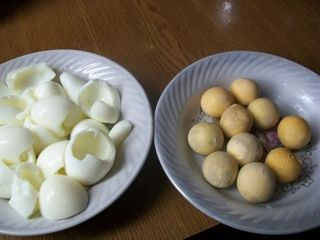
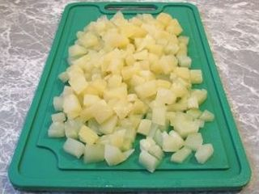
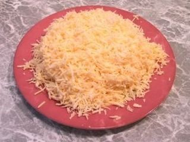
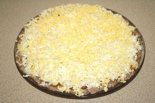

Шаг 1: берем яйца.

Берем куриные яйца и варим их вкрутую (8 - 10 минут), сливаем горячую воду и сразу же заливаем их холодной водой, чтобы в дальнейшем они хорошо чистились от скорлупы. Остудив, очищаем их и отделяем желтки от белков. Затем берем терку и трем по отдельности в разные тарелки белки и желтки на мелкой терке. Откладываем в сторону.
Шаг 2: берем консервированные ананасы.

Выбирая консервированные ананасы, обратите внимание на целостность банки, никаких вмятин на ней быть не должно. Лучше выбирать продукт в прозрачной стеклянной банке. Так можно оценить и его вид. Берем ананасы законсервированные ломтиками. Затем вынимаем их из сиропа и на разделочной доске нарезаем ножом на небольшие кусочки, размером 2х2 и откладываем в сторону.
Шаг 3: готовим смесь из сыра и чеснока.

Берем необходимое нам количество чеснока, чистим его, затем моем и натираем зубчики на мелкой терке. Далее смешиваем его с натертым на мелкой терке твердым сыром. Все тщательно перемешиваем.
Шаг 4: выкладываем ингредиенты слоями.

Берем большую плоскую тарелку и на нее слоями выкладываем наши ингредиенты, хорошо промазывая каждый слой майонезом. Сначала тертые на мелкой терке яичные белки, на них мелко нарезанные консервированные ананасы и смешанный сыр с чесноком, а сверху тертый на мелкой терке яичный желток (последний слой сверху смазывать не нужно).